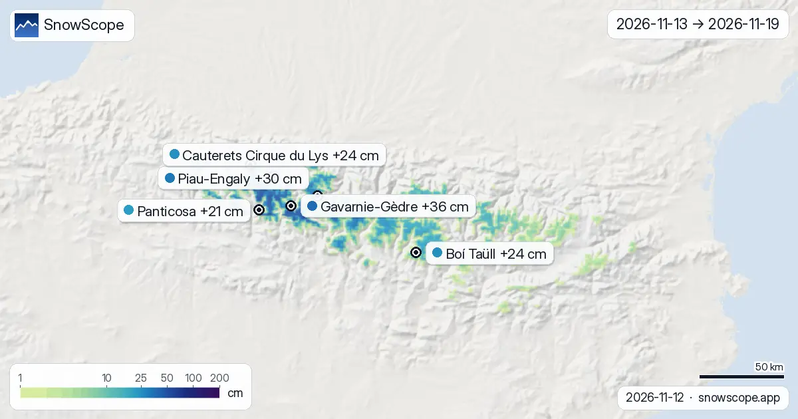
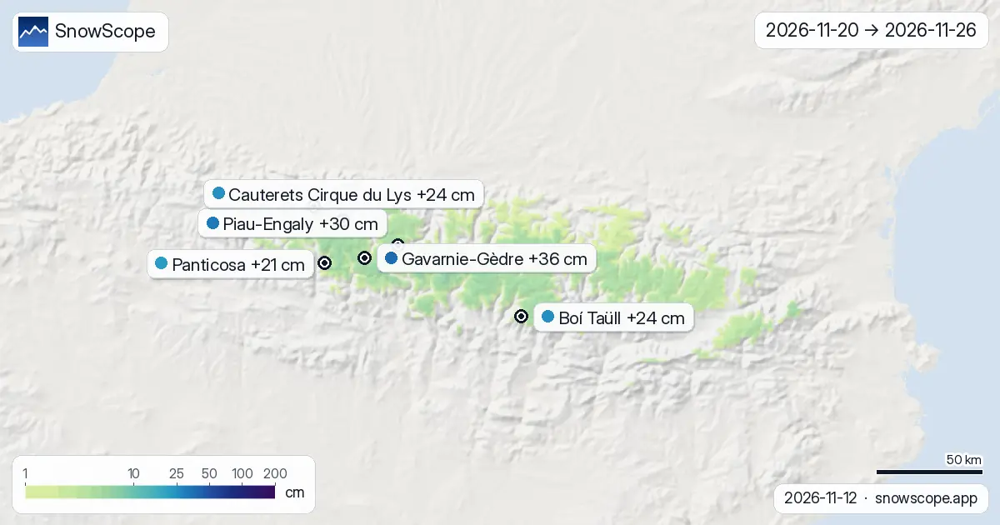
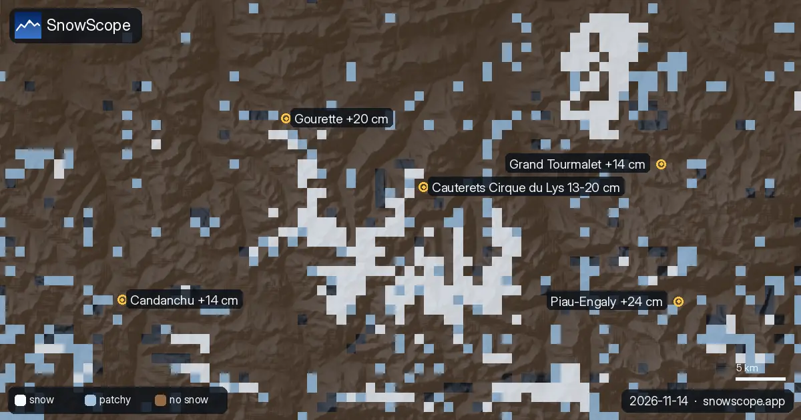

Dónde nieva en los Pirineos en los próximos 14 días: Gavarnie-Gèdre lidera con 36 cm
Los mapas de hoy miran dos semanas adelante en los Pirineos, del 13 de noviembre al 26 de noviembre. Vienen de los dos modelos globales que llegan a dos semanas, ECMWF y GFS; los colores son el punto medio de los dos, cada cifra de este parte se da con su horquilla. Gavarnie-Gèdre sale en cabeza con unos 36 cm de nieve nueva en altura (15 cm–57 cm entre los dos modelos); Piau-Engaly va después con 30 cm. Confianza: buena para la tendencia, menor para cada cifra suelta.
Consulta la previsión de nieve en tiempo real de Gavarnie-Gèdre en la app SnowScopeEspesor de nieve, alertas de nieve polvo y mapa 3D, gratis.
Estación por estación, los próximos 14 días
En Gavarnie-Gèdre (Francia) las dos semanas suman unos 36 cm (15 cm–57 cm según el modelo): 31 cm al final de la primera semana, luego 5 cm más. Apunta el 19 de noviembre: es el día más grande, con 10 cm, de 4 días con 5 cm o más.
Piau-Engaly (Francia): unos 30 cm en 14 días (14 cm–46 cm según el modelo), 25 cm la primera semana y 5 cm la segunda. El día con más nieve es el 19 de noviembre, con 8 cm.
Boí Taüll (España): unos 24 cm en 14 días (13 cm–36 cm según el modelo), 19 cm la primera semana y 5 cm la segunda. El día con más nieve es el 17 de noviembre, con 6 cm.
Cauterets Cirque du Lys (Francia): unos 24 cm en 14 días (9 cm–39 cm según el modelo), 19 cm la primera semana y 5 cm la segunda. El día con más nieve es el 19 de noviembre, con 9 cm.
En Panticosa (España) las dos semanas suman unos 21 cm (8 cm–34 cm según el modelo): 17 cm al final de la primera semana, luego 4 cm más. El día con más nieve es el 19 de noviembre, con 8 cm.
Gourette (Francia): unos 20 cm en 14 días (6 cm–34 cm según el modelo), 15 cm la primera semana y 5 cm la segunda. El día con más nieve es el 19 de noviembre, con 9 cm.
| Estación | Espesor de nieve | Nieve nueva, 72 h | Previsto, próximos días | Cota máx. |
|---|---|---|---|---|
| Gavarnie-Gèdre | 2 cm | 2 cm | 22 cm | 2283 m |
| Piau-Engaly | 7 cm | 16 cm | 29 cm | 2527 m |
| Boí Taüll | 2 cm | 4 cm | 16 cm | 2747 m |
| Cauterets Cirque du Lys | 11 cm | 6 cm | 33 cm | 2420 m |
| Panticosa | 0 cm | 0 cm | 15 cm | 2202 m |
| Gourette | 4 cm | 5 cm | 25 cm | 2453 m |

Los días a vigilar
Los días de nieve en la región, sobre las 53 estaciones de nuestra lista: jueves 19 de noviembre (17 de 53 estaciones con 5 cm o más, hasta 10 cm en Gavarnie-Gèdre).

Primera semana frente a segunda
Sumando la región, el 67 % de la nieve de la quincena ya ha caído el 19 de noviembre; lo que muestran los mapas del 20 de noviembre al 26 de noviembre es el resto.
Pronto en la quincena: Gavarnie-Gèdre, Piau-Engaly, Boí Taüll, Cauterets Cirque du Lys, Panticosa y Gourette reciben la mayor parte de su nieve la primera semana.
En el mapa, unos 1369 km² de terreno de montaña reciben 20 cm o más en las dos semanas, y 121 km² reciben 50 cm o más.
Nieve nueva por altura
Franja a franja, contando cada píxel de montaña de la región y no solo las áreas esquiables, la quincena da: entre 1000 m y 1500 m: casi nada; entre 1500 m y 2000 m: típicamente 1 cm, el cuarto más nevado de esa franja 3 cm o más; entre 2000 m y 2500 m: típicamente 12 cm, el cuarto más nevado de esa franja 20 cm o más; entre 2500 m y 3000 m: típicamente 26 cm, el cuarto más nevado de esa franja 38 cm o más.
Cómo leer los mapas
Las imágenes: un mapa suma las dos semanas enteras, los dos siguientes las separan en primera y segunda semana. Verde claro = un espolvoreo, azul profundo y morado = un gran total; los pines llevan el valor de la parte alta de cada estación.
Una previsión a dos semanas es una tendencia. La primera semana suele acercarse a lo que ocurre; la segunda aún puede cambiar mucho, por eso junto a cada total va la horquilla de los dos modelos y los mapas se redibujan cada mañana.
Consejos para esquiadores
- Elige tus días con el mapa de la semana uno y solo tu región con el de la semana dos.
- La isoterma de 0 °C es una previsión y puede moverse varios cientos de metros, lo que cambia dónde la lluvia pasa a nieve: vuelve a mirar el mapa el día antes.
- Antes de cualquier salida fuera de pista o de travesía, lee el boletín oficial de aludes (enlaces abajo).
- Nieve en el mapa no significa que la estación esté abierta: consulta remontes y fechas en su web.
Sobre estas cifras
Los espesores de nieve de las estaciones son la nieve más profunda en las pistas altas según el modelo de nieve de SnowScope (unos 1 km, cálculo del 12 de noviembre); son estimaciones para una zona, no una medida en un punto. Los valores de las estaciones de medida son medidas en la fecha indicada. Las previsiones pueden cambiar. Consulta siempre el boletín oficial de aludes antes de salir fuera de pista.
Boletines oficiales de aludes: Météo-France / Meteocat / AEMET
Citar este informe
Para investigación, docencia o prensa: cifras y gráficos reutilizables libremente bajo CC BY 4.0 con esta cita.
SnowScope (2026), Dónde nieva en los Pirineos en los próximos 14 días: Gavarnie-Gèdre lidera con 36 cm, https://snowscope.app/blog/es/2026/11/pyrenees-2-week-snow-forecast-maps-12-november-2026.html, consultado el 2026-11-12
SnowScope (Atlas Labs). (2026, November 12). Dónde nieva en los Pirineos en los próximos 14 días: Gavarnie-Gèdre lidera con 36 cm. SnowScope snow reports. https://snowscope.app/blog/es/2026/11/pyrenees-2-week-snow-forecast-maps-12-november-2026.html
BibTeX
@misc{snowscope2026pyrenees2weeksnowforecas,
author = {{SnowScope (Atlas Labs)}},
title = {Dónde nieva en los Pirineos en los próximos 14 días: Gavarnie-Gèdre lidera con 36 cm},
year = {2026},
month = nov,
howpublished = {\url{https://snowscope.app/blog/es/2026/11/pyrenees-2-week-snow-forecast-maps-12-november-2026.html}},
note = {Published 2026-11-12 18:27 UTC; accessed 2026-11-12}
}· CC BY 4.0 · Métodos, datos y herramientas →
Gavarnie-Gèdre: nieve y temperatura según la altura, este invierno vs el pasado (herramientas) →
Sigue Gavarnie-Gèdre
Gratis: un aviso cuando llega la nieve y la previsión cada mañana.
Más partes de nieve

Parte de nieve en los Pirineos, 12 de noviembre. De aquí al 15 de noviembre, la previsión trae 33 cm en Cauterets Cirque du Lys, 29 cm en Piau-Engaly …

Superficie nevada: 910 km² el 12 de noviembre, 1100 km² hoy, 640 km² previstos el 17 de noviembre. Habrá que seguirla. Lluvia y nieve mezcladas: solo …

La isoterma de 0 °C decide si las montañas guardan nieve o sueltan lluvia: en los próximos días nuestra previsión la sitúa entre 2230 m y 2820 m en …